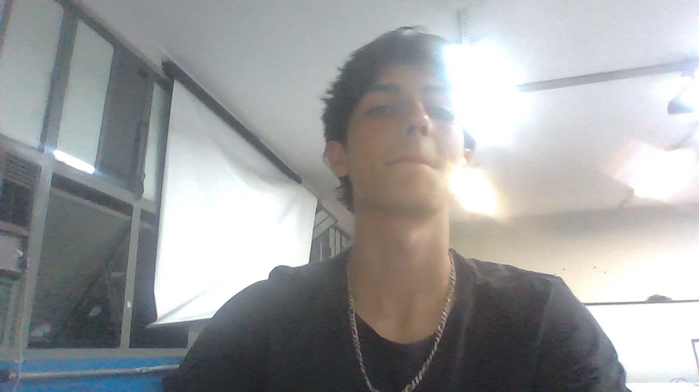

Lucas Freire Cardoso
Sobre O Melhor...
O aluno mais legal lindo e estudioso que já pisou na etec camargo aranha. Com apenas 17 anos
Lucas já teve várias conquistas como o homem mais bonito do mundo, sendo a conquista menos
importante pra Lucas.
Lucas é um empresário, empreendedor, inventor e filantropo brasileiro. Nascido em
20 de maio de 2008 , Brasília, Brasil não possui nenhum
filho ainda.
Com apenas 500,6 bilhões USD (2025 Forbes) Lucas é o mais novo bilhonário no Brasil.
Organizações fundadas: Tesla, Inc., SpaceX, OpenAI, xAI, Google, Apple, MAIS...
Cônjuge: Nenhuma ainda
Formação
Todas
Experiência
Todas